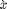
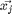

Contents
Distance Metric Learning for Large Margin Nearest Neighbor Classification
%%%%%%%%%%%%%%%%%%%%%%%%%%%%%%%%%%%%%%%%%%%%%%%%%%%%%%%%%%%%%%% % Course Project Final Report (ECE 602: Introduction to Optimization) % NAME: Bharat Venkitesh, ID: 20676494 % Date: April 24,2017 % University of Waterloo %%%%%%%%%%%%%%%%%%%%%%%%%%%%%%%%%%%%%%%%%%%%%%%%%%%%%%%%%%%%%%% clc clear all close all
Introduction
The k-Nearest Neighbour(kNN) rule classifies each unlabeled example by the majority label of its k-nearest neighbors( based on distance measure) in the training data. Though the idea is simple, it yields competetive results. The performance of the kNN depends on the way the distances are computed between examples in the data. More often when no prior knowledge is available euclidean distance between examples. Euclidean distance may not be the right distance metric and can not capture all the properties in the data. In this project, Mahalanobis distance metric, which is a linear transformation of the input space, that precedes the kNN classification is learnt. The distance metric learning is modeled as a problem in convex optimization.
Problem Formulation
The algorithm is based on the observation that kNN will accurately classifiy if its k nearest neighbour belong to the same class label. The algorithm increases the number of samples from the training data with this property by learning a linear transformation of the input space that precedes kNN classification using Euclidean distances. The linear transfomration is derived by minimizing a loss function, The first term penalizes large distances between samples in the same class desired as k-nearest neighbors and the second term penalizes small distances between samples with different labels. The euclidean distance in transformed space is equivalent to mahalanobis distance in the input space.
Basic Notations
First a few basic formulae and notations are introduced which is used later on in the convex optimization. Let be the d-dimensional samples. Let the linear transformation be , which is a dxd dimensional matrix. The tranformed or projected samples are then = . The squared euclidean distance in the transformed domain is
It is common to express squared distance metrics as square matrix as follow
Any matrix formed from real valued matrix \textbf{L} is guaranteed to be a positive semi-definite matrix. The squared distances interms of \textbf{M} is
For each sample , a target nighbour  is defined as one of the k closest neighbour of the same class. This is denoted as , is a target neighbour to . For each sample there are k target neighbours(same class). Note that does not imply the reverse is true. For kNN classification to succeed, target neighbors of each input should be closer than all differently labeled inputs. For each input a perimeter can be imagined around the target neighbours. A diffferently labeled input should not inavde this perimeter. These inputs are defined as impostors. The important goal of the learning is to redice the number of impostors. A large distance is to be maintained between the impostors and the perimeter defined by the target neighbours. By ensuring a margin of safety, the algorithm is robust to noise in the training data. Hence the name Large Margin Nearest Neighbour(LMNN) classification. For an input with label and target neighbor , an impostor is any input with a different label such that
Loss Function
The loss function consists of two terms, one which pulls target neighbors closer together, and another which pushes differently labeled examples further apart. The two terms have competing effects, since the first is reduced by shrinking the distances between examples while the second is generally reduced by magnifying them. The first term in the loss function penalizes large distances between each input and its target neighbors. In terms of the linear transformation of the input space, the sum of these squared distances is given by
It does not penalize all the samples with same labels, but only the target neighbours. The second term in the loss function penalizes small distances between differently labeled examples. To simplify notation, we introduce a new indicator variable =1 if and only if , and =0. The second term is
where the term , denotes the standard hinge loss. The final loss function is
The above can be rewritten in terms of matrix $\textbf{M} as follows,
With this substitution, the loss function is now expressed over positive semidefinite matrices , as opposed to real-valued matrices . The loss function is a piecewise linear, convex function of the elements in the matrix . The first term(penalizing large distances between target neighbors) is linear in the elements of M, while the second term (penalizing impostors) is derived from the convex hinge loss. The loss function is brought to a standard form, formulated as an semidefinite programming(SDP) by introducing slack variables for all triplets of target neighbours and impostots . The slack variable , is used to measure the amount by which the large margin inequality is violated. The SDP is as follows
Code Run through
The data used here is 4 dimensional data with 429 training samples. The slack variable used above is a combination of 3 incides leading to a total of 22787 inequalities. For computational sake the data is sampled. The nearest neighbour is set to 3.
load bal.mat % xtr yTr xTe yTe sample=150; xTr=xTr(:,35:end); yTr=yTr(35:end); y=randsample(size(xTr,2),sample); %radom sampling y=sort(y); K=3; % nearest neighbour xTr=xTr(:,y); yTr=yTr(:,y); % test_sample=randsample(length(yTe),50); % test_sample=sort(test_sample);
The target neighbours are calculated for each sample and their corresponding distances.
[d,n]=size(xTr); un=unique(yTr); NN=zeros(K,n); for c=un i=find(yTr==c); nn=LSKnn(xTr(:,i),xTr(:,i),2:K+1); % gives the indices of k nearest neighbours NN(:,i)=i(nn); end Ni=zeros(K,n); dis=zeros(K,n); %target neighbours for nnid=1:K Ni(nnid,:)=sum((xTr-xTr(:,NN(nnid,:))).^2,1)+1; % euclidean distance disvector{nnid}=xTr-xTr(:,NN(nnid,:)); end;
The impostors are calcuated for each sample and target neighbour , the samples that violate the perimeter defined by the target neighbours.
for c=un i=find(yTr==c); index=find(yTr~=c); X1=xTr(:,i); X2=xTr(:,index); distmat=zeros(4,length(i),length(index)); for a=1:length(i) for b=1:length(index) distmat(:,a,b)=X1(:,a)-X2(:,b); end end distancevector{c}=distmat; end for i=1:sample distmat=[]; index=find(yTr~=yTr(i)); dist=distance(xTr(:,i),xTr(:,index)); id=find(dist<=Ni(3,i)+1); %violating the perimeter % for j=1:length(index) % distmat(:,j)=xTr(:,i)-xTr(:,j); % end distancevector2{i}=index(id)'; end
The total number of impostors are calculated for each sample
total=0; for i=1:sample len(i)=size(distancevector2{i},1); end total=sum(len); num_imp=zeros(1,length(len)+1); num_imp(2:end)=len(1:end); cc=cumsum(num_imp);
CVX Package
The cvx is run for variables and
cvx_begin variable M(d,d) symmetric variable e(total*3) nonnegative f_x=0; for i=1:sample for j=1:K f_x=f_x+(xTr(:,i)-xTr(:,NN(j,i)))'*M*(xTr(:,i)-xTr(:,NN(j,i))); end end for i=1:sample for l=1:len(i) for j=1:K f_x=f_x+e((cc(i))+(l-1)*3+j); end end end minimize f_x subject to for i=1:sample for l=1:len(i) for j=1:K (xTr(:,i)-xTr(:,distancevector2{i}(l)))'*M*(xTr(:,i)-xTr(:,distancevector2{i}(l)))-(xTr(:,i)-xTr(:,NN(j,i)))'*M*(xTr(:,i)-xTr(:,NN(j,i)))>=1-e((cc(i))+(l-1)*3+j); end end end M>=0 e>=0 cvx_end
Calling SDPT3 4.0: 68779 variables, 22933 equality constraints
For improved efficiency, SDPT3 is solving the dual problem.
------------------------------------------------------------
num. of constraints = 22933
dim. of linear var = 68779
*******************************************************************
SDPT3: Infeasible path-following algorithms
*******************************************************************
version predcorr gam expon scale_data
NT 1 0.000 1 0
it pstep dstep pinfeas dinfeas gap prim-obj dual-obj cputime
-------------------------------------------------------------------
0|0.000|0.000|2.5e+04|4.5e+02|7.8e+09|-9.893811e+06 0.000000e+00| 0:0:00| spchol 1 1
1|0.986|0.989|3.6e+02|5.3e+00|1.2e+08|-1.458894e+05 -5.908607e+06| 0:0:01| spchol 1 1
2|0.286|1.000|2.6e+02|1.5e-01|1.5e+08|-1.052784e+05 -8.377901e+06| 0:0:01| spchol 1 1
3|0.580|1.000|1.1e+02|4.5e-02|9.5e+07|-4.604728e+04 -9.828173e+06| 0:0:01| spchol 1 1
4|0.700|1.000|3.2e+01|1.4e-02|4.1e+07|-1.529746e+04 -7.445027e+06| 0:0:01| spchol 1 1
5|0.839|0.950|5.2e+00|2.0e-03|7.6e+06|-3.296122e+03 -1.846796e+06| 0:0:02| spchol 1 1
6|0.635|1.000|1.9e+00|1.3e-04|4.7e+06|-1.304705e+03 -1.205252e+06| 0:0:02| spchol 1 1
7|0.343|1.000|1.3e+00|1.3e-05|4.3e+06|-9.530167e+02 -7.741809e+05| 0:0:02| spchol 1 1
8|0.156|0.620|1.1e+00|6.0e-06|4.4e+06|-8.455287e+02 -7.192571e+05| 0:0:02| spchol 1 1
9|0.233|1.000|8.1e-01|1.3e-07|5.1e+06|-7.114635e+02 -8.750505e+05| 0:0:02| spchol 1 1
10|0.265|1.000|6.0e-01|1.4e-08|5.7e+06|-5.975814e+02 -1.080388e+06| 0:0:03| spchol 1 1
11|0.290|0.980|4.2e-01|1.6e-09|5.3e+06|-5.007017e+02 -9.907739e+05| 0:0:03| spchol 1 1
12|0.058|0.459|4.0e-01|9.2e-10|5.8e+06|-4.911081e+02 -1.066451e+06| 0:0:03| spchol 1 1
13|0.162|0.640|3.3e-01|3.4e-10|7.1e+06|-4.590391e+02 -1.510006e+06| 0:0:03| spchol 1 1
14|0.426|0.803|1.9e-01|6.8e-11|5.7e+06|-3.835579e+02 -1.569189e+06| 0:0:03| spchol 1 1
15|0.321|1.000|1.3e-01|2.4e-12|5.5e+06|-3.487512e+02 -1.531098e+06| 0:0:03| spchol 1 1
16|0.730|1.000|3.5e-02|2.6e-12|3.1e+06|-2.943852e+02 -1.594817e+06| 0:0:04| spchol 1 1
17|0.948|1.000|1.8e-03|7.0e-03|5.6e+05|-2.790705e+02 -4.697395e+05| 0:0:04| spchol 1 1
18|0.980|0.921|3.6e-05|9.2e-04|4.0e+04|-2.814784e+02 -3.841513e+04| 0:0:04| spchol 1 1
19|0.834|0.814|5.9e-06|1.8e-04|2.0e+04|-3.190675e+02 -1.854895e+04| 0:0:04| spchol 1 1
20|0.592|0.870|2.4e-06|2.4e-05|1.2e+04|-3.422590e+02 -9.142904e+03| 0:0:04| spchol 1 1
21|0.139|0.678|2.1e-06|8.3e-06|1.1e+04|-3.525248e+02 -6.472861e+03| 0:0:05| spchol 1 1
22|0.045|0.125|2.0e-06|7.7e-06|1.1e+04|-3.594956e+02 -6.306583e+03| 0:0:05| spchol 1 1
23|0.252|0.547|1.5e-06|3.9e-06|1.0e+04|-3.774408e+02 -5.413722e+03| 0:0:05| spchol 1 1
24|0.319|0.903|1.0e-06|6.7e-07|8.9e+03|-3.946890e+02 -4.175521e+03| 0:0:05| spchol 1 1
25|0.078|0.390|9.4e-07|6.1e-07|9.9e+03|-4.051808e+02 -4.350390e+03| 0:0:05| spchol 1 1
26|0.355|0.538|6.0e-07|4.7e-07|9.2e+03|-4.149360e+02 -4.631217e+03| 0:0:05| spchol 1 1
27|0.482|0.802|3.1e-07|2.1e-07|7.4e+03|-4.313022e+02 -4.065419e+03| 0:0:06| spchol 1 1
28|0.427|0.763|1.8e-07|1.1e-07|6.3e+03|-4.430707e+02 -3.587781e+03| 0:0:06| spchol 1 1
29|0.212|0.687|1.4e-07|7.3e-08|6.7e+03|-4.526927e+02 -3.411987e+03| 0:0:06| spchol 1 1
30|0.540|0.932|6.5e-08|3.3e-08|5.4e+03|-4.691046e+02 -3.226008e+03| 0:0:06| spchol 1 1
31|0.110|0.490|5.8e-08|3.7e-08|5.8e+03|-4.702955e+02 -3.082012e+03| 0:0:06| spchol 1 1
32|0.293|0.300|4.1e-08|3.3e-08|5.3e+03|-4.814194e+02 -3.085918e+03| 0:0:07| spchol 1 1
33|0.471|0.931|2.2e-08|1.0e-08|4.5e+03|-5.033647e+02 -2.732583e+03| 0:0:07| spchol 1 1
34|0.122|0.413|1.9e-08|9.4e-09|4.8e+03|-5.096167e+02 -2.718532e+03| 0:0:07| spchol 1 1
35|0.678|0.936|6.1e-09|3.7e-09|3.2e+03|-5.410327e+02 -2.465975e+03| 0:0:07| spchol 1 1
36|0.175|0.570|5.1e-09|2.6e-09|3.2e+03|-5.563848e+02 -2.203702e+03| 0:0:07| spchol 1 1
37|0.227|1.000|3.9e-09|7.6e-10|3.3e+03|-5.806001e+02 -1.905511e+03| 0:0:08| spchol 1 1
38|0.241|0.374|3.0e-09|1.1e-09|3.2e+03|-5.990436e+02 -2.009266e+03| 0:0:08| spchol 1 1
39|0.334|0.535|2.0e-09|9.3e-10|3.2e+03|-6.125693e+02 -2.110456e+03| 0:0:08| spchol 1 1
40|0.275|0.636|1.4e-09|6.4e-10|2.9e+03|-6.394636e+02 -1.935744e+03| 0:0:08| spchol 1 1
41|0.441|0.755|8.0e-10|3.7e-10|2.6e+03|-6.650590e+02 -1.951931e+03| 0:0:08| spchol 1 1
42|0.428|0.844|4.6e-10|1.8e-10|2.3e+03|-6.891849e+02 -1.803386e+03| 0:0:08| spchol 1 1
43|0.332|0.470|3.1e-10|1.6e-10|2.1e+03|-7.013761e+02 -1.770317e+03| 0:0:09| spchol 1 1
44|0.460|0.481|1.7e-10|1.3e-10|1.7e+03|-7.238580e+02 -1.700045e+03| 0:0:09| spchol 1 1
45|0.333|0.716|1.1e-10|6.2e-11|1.6e+03|-7.443575e+02 -1.561553e+03| 0:0:09| spchol 1 1
46|0.115|0.171|9.8e-11|6.8e-11|1.6e+03|-7.503862e+02 -1.562455e+03| 0:0:09| spchol 1 1
47|0.405|1.000|5.8e-11|1.5e-11|1.5e+03|-7.710040e+02 -1.478055e+03| 0:0:09| spchol 1 1
48|0.318|0.306|4.0e-11|1.9e-11|1.3e+03|-7.781192e+02 -1.477575e+03| 0:0:09| spchol 1 1
49|0.509|0.800|1.9e-11|9.7e-12|1.1e+03|-8.036569e+02 -1.407504e+03| 0:0:10| spchol 1 1
50|0.241|0.562|1.5e-11|7.2e-12|1.1e+03|-8.154637e+02 -1.367825e+03| 0:0:10| spchol 1 1
51|0.440|0.617|8.3e-12|4.9e-12|9.2e+02|-8.350718e+02 -1.331875e+03| 0:0:10| spchol 1 1
52|0.311|1.000|5.7e-12|1.2e-12|9.2e+02|-8.490740e+02 -1.264953e+03| 0:0:10| spchol 1 1
53|0.361|0.571|3.6e-12|1.4e-12|8.5e+02|-8.551143e+02 -1.268416e+03| 0:0:10| spchol 1 1
54|0.485|0.731|1.9e-12|1.1e-12|7.3e+02|-8.617206e+02 -1.257652e+03| 0:0:11| spchol 1 1
55|0.394|0.855|1.1e-12|9.1e-13|6.2e+02|-8.868606e+02 -1.192617e+03| 0:0:11| spchol 1 1
56|0.081|0.484|1.0e-12|1.2e-12|7.0e+02|-8.884634e+02 -1.199231e+03| 0:0:11| spchol 1 1
57|0.127|0.702|9.0e-13|1.1e-12|8.2e+02|-8.868667e+02 -1.206607e+03| 0:0:11| spchol 1 1
58|0.692|0.673|2.7e-13|1.1e-12|4.9e+02|-9.016287e+02 -1.189534e+03| 0:0:11| spchol 1 1
59|0.278|0.678|2.0e-13|1.1e-12|4.3e+02|-9.213924e+02 -1.146114e+03| 0:0:11| spchol 1 1
60|0.430|0.903|1.1e-13|8.6e-13|4.0e+02|-9.337209e+02 -1.140708e+03| 0:0:12| spchol 1 1
61|0.322|0.980|6.8e-14|7.7e-13|4.0e+02|-9.416685e+02 -1.126907e+03| 0:0:12| spchol 1 1
62|0.316|0.430|5.2e-14|1.2e-12|3.8e+02|-9.444152e+02 -1.129840e+03| 0:0:12| spchol 1 1
63|0.733|0.889|4.5e-14|8.8e-13|2.6e+02|-9.533425e+02 -1.127028e+03| 0:0:12| spchol 1 1
64|0.340|0.781|1.1e-13|9.4e-13|2.1e+02|-9.707815e+02 -1.096163e+03| 0:0:12| spchol 1 1
65|0.258|0.351|2.5e-13|1.4e-12|2.0e+02|-9.801469e+02 -1.093398e+03| 0:0:12| spchol 1 1
66|0.460|0.467|1.8e-13|1.5e-12|1.6e+02|-9.916990e+02 -1.089665e+03| 0:0:13| spchol 1 1
67|0.590|0.449|1.4e-13|1.6e-12|1.2e+02|-1.001143e+03 -1.086714e+03| 0:0:13| spchol 1 1
68|0.242|0.201|4.1e-13|2.0e-12|1.1e+02|-1.005237e+03 -1.084181e+03| 0:0:13| spchol 1 1
69|0.388|0.402|1.9e-12|1.9e-12|9.2e+01|-1.013907e+03 -1.077195e+03| 0:0:13| spchol 1 2
70|0.044|0.055|1.8e-12|2.6e-12|9.2e+01|-1.014655e+03 -1.077252e+03| 0:0:13| spchol 1 1
71|0.808|0.932|2.3e-12|9.2e-13|5.0e+01|-1.027153e+03 -1.066382e+03| 0:0:13| spchol 1 1
72|0.060|0.485|2.8e-12|1.2e-12|5.3e+01|-1.027731e+03 -1.063018e+03| 0:0:14| spchol 1 2
73|0.027|0.036|2.7e-12|1.9e-12|5.3e+01|-1.028083e+03 -1.062965e+03| 0:0:14| spchol 1 1
74|0.183|0.094|3.2e-12|2.5e-12|4.9e+01|-1.030099e+03 -1.062639e+03| 0:0:14| spchol 1 1
75|0.419|1.000|2.0e-12|7.5e-13|4.4e+01|-1.033675e+03 -1.058728e+03| 0:0:14| spchol 1 1
76|0.583|0.426|9.5e-13|1.2e-12|3.0e+01|-1.037825e+03 -1.058094e+03| 0:0:14| spchol 1 1
77|0.923|0.854|2.7e-13|9.2e-13|1.4e+01|-1.043221e+03 -1.055554e+03| 0:0:15| spchol 1 1
78|0.598|0.940|2.5e-13|8.0e-13|8.6e+00|-1.045889e+03 -1.052564e+03| 0:0:15| spchol 1 1
79|0.188|0.064|2.7e-12|1.5e-12|8.0e+00|-1.046237e+03 -1.052524e+03| 0:0:15| spchol 1 1
80|0.254|0.137|3.5e-12|2.0e-12|7.3e+00|-1.046766e+03 -1.052471e+03| 0:0:15| spchol 1 1
81|0.471|0.709|1.8e-12|1.3e-12|5.6e+00|-1.047803e+03 -1.051801e+03| 0:0:16| spchol 1 1
82|0.256|0.304|1.9e-12|1.7e-12|5.4e+00|-1.048051e+03 -1.051717e+03| 0:0:16| spchol 1 1
83|0.454|0.706|1.1e-12|1.2e-12|4.3e+00|-1.048624e+03 -1.051386e+03| 0:0:16| spchol 1 1
84|0.380|0.305|1.7e-12|1.6e-12|3.7e+00|-1.048889e+03 -1.051328e+03| 0:0:16| spchol 1 1
85|0.948|0.756|1.1e-13|1.1e-12|8.5e-01|-1.050070e+03 -1.050844e+03| 0:0:16| spchol 1 1
86|0.977|0.978|4.6e-13|7.7e-13|2.3e-02|-1.050456e+03 -1.050478e+03| 0:0:17| spchol 1 1
87|0.989|0.989|7.1e-12|7.6e-13|4.6e-04|-1.050467e+03 -1.050468e+03| 0:0:17| spchol 1 1
88|0.989|0.989|1.0e-13|1.1e-12|7.8e-06|-1.050468e+03 -1.050468e+03| 0:0:17|
stop: max(relative gap, infeasibilities) < 1.49e-08
-------------------------------------------------------------------
number of iterations = 88
primal objective value = -1.05046761e+03
dual objective value = -1.05046761e+03
gap := trace(XZ) = 7.81e-06
relative gap = 3.72e-09
actual relative gap = 3.57e-09
rel. primal infeas (scaled problem) = 1.04e-13
rel. dual " " " = 1.07e-12
rel. primal infeas (unscaled problem) = 0.00e+00
rel. dual " " " = 0.00e+00
norm(X), norm(y), norm(Z) = 2.0e+02, 7.5e+18, 1.1e+19
norm(A), norm(b), norm(C) = 3.6e+02, 2.7e+02, 1.5e+02
Total CPU time (secs) = 16.92
CPU time per iteration = 0.19
termination code = 0
DIMACS: 1.7e-12 0.0e+00 8.1e-11 0.0e+00 3.6e-09 3.7e-09
-------------------------------------------------------------------
------------------------------------------------------------
Status: Solved
Optimal value (cvx_optval): +1050.47
Results
The projection matrix is calculated for the proposed technique and the results are compared with four algorithms. 1)kNN before LMNN, 2) kNN after LMNN, 3) kNN after PCA. We see that kNN performs well after LMNN compared to the other two methods
L_lmnn=sqrt(M); L_knn=[]; [L_pca,score,latent,tsquared,explained]= pca(xTr','Algorithm','eig','Centered',false); L_pca=L_pca'; Pca_err=knncl(L_pca,xTr,yTr,xTe,yTe,1,'train',0); knn_err=knncl(L_knn,xTr,yTr,xTe,yTe,1,'train',0); lmnn_err=knncl(L_lmnn,xTr,yTr,xTe,yTe,1,'train',0); fprintf('Bal data set\n'); fprintf('\n\nTesting error LMNN: %2.2f%%\n',100*lmnn_err); fprintf('Testing error kNN: %2.2f%%\n',100*knn_err); fprintf('Testing error PCA: %2.2f%%\n',100.*Pca_err);
Progress:[**********]0.00/18.87 Bal data set Testing error LMNN: 14.15% Testing error kNN: 17.92% Testing error PCA: 18.87%
Conclusion and Discussion
A new framework for large margin nearest neighbor (LMNN) classification is introduced. From labeled training examples, a Mahalanobis distance metric is learned for kNN classification. The required optimization is formulated as a semidefinite programming. The framework makes no parametric assumptions about the structure or distribution of the data, though it does not scale well for large data sets. The accuracy of kNN classification is imporved significantly by learning a metric in this way.
References
1)Kilian Q. Weinberger and Lawrence K. Saul. 2009. Distance Metric Learning for Large Margin Nearest Neighbor Classification. J. Mach. Learn. Res. 10 (June 2009), 207-244.